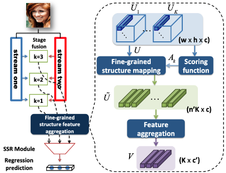
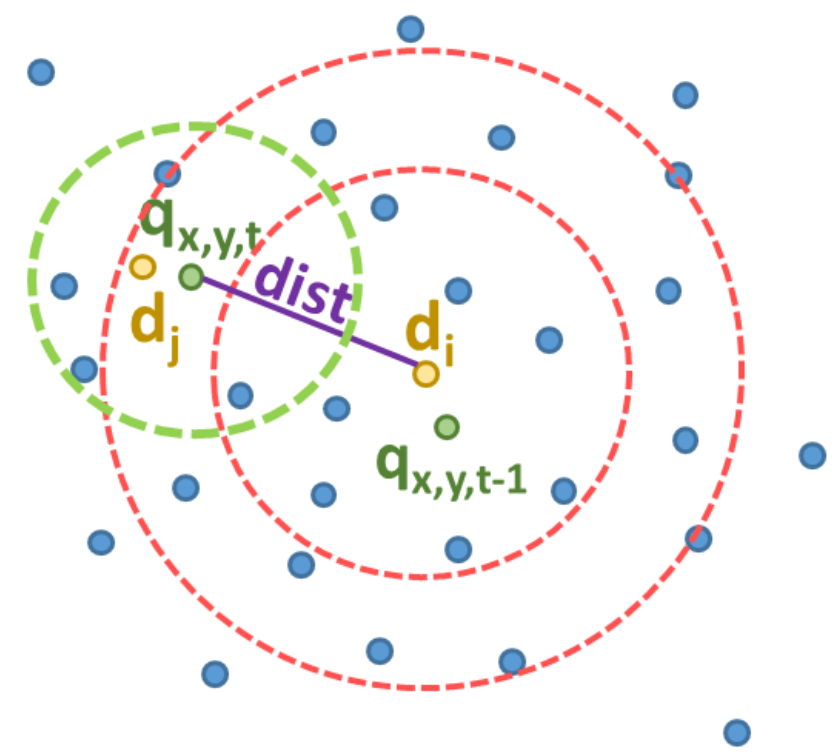
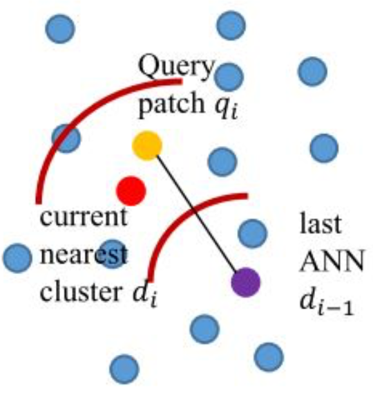
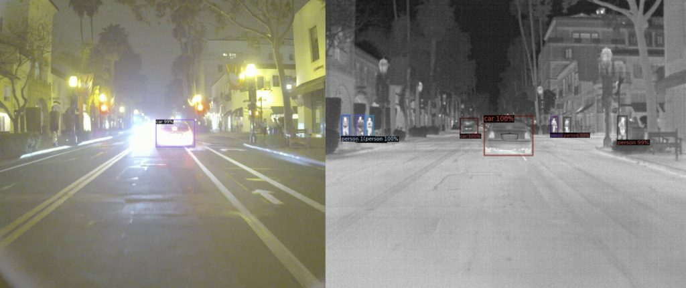

Education
Ph.D. in University of Maryland

M.S. in Carnegie Mellon University
Sep 2019 - Dec 2020
Master in Computer Vision (MSCV), Robotics Institute, School of Computer Science
Advised by Prof. Deva Ramanan, Dr.
Christoph Mertz, Shu Kong.
M.S. in National Taiwan University
2013 - 2016
Graduate Institute of Electronics Engineering
Advised by Prof. Shao-Yi Chien
Lab: Media IC & System Lab
B.S. in National Cheng Kung University
2008 - 2013
Electrical Engineering (EE), Industrail and Information Management (IIM), double major
EE advised by Prof. Soon-Jyh Chang
IIM advised by Prof. Chiang Kao
Publication
Shape-aware Text-driven Layered Video Editing
Yao-Chih Lee, Ji-Ze Genevieve Jang, Yi-Ting Chen, Elizabeth Qiu, Jia-Bin Huang.
IEEE Conference on Computer Vision and Pattern Recognition (CVPR), 2023

Multimodal Object Detection via Probabilistic Ensembling
Yi-Ting Chen*, Jinghao Shi*, Zelin Ye*, Christoph Mertz, Deva Ramanan# and Shu Kong#.
IEEE European Conference on Computer Vision (ECCV), 2022, Oral (~3%)

FSA-Net: Learning Fine-Grained Structure Aggregation for Head Pose Estimation from a Single Image
Tsun-Yi Yang, Yi-Ting Chen, Yen-Yu Lin, and Yung-Yu Chuang.
IEEE Conference on Computer Vision and Pattern Recognition (CVPR), 2019

SRIANN: Spherical Ring Intersection Approximate Nearest Neighbor Search in Videos
Yi-Ting Chen, Wei-Chih Tu, and Shao-Yi Chien
IEEE International Conference on Image Processing (ICIP), 2018
[Paper]

Fast Video Super-Resolution via Approximate Nearest Neighbor Searchs
Yi-Ting Chen, Wei-Chih Tu, and Shao-Yi Chien
IEEE International Conference on Image Processing (ICIP), 2016, Oral
[Paper]

Work Experience
- Neural radiance fields related topics.
- Conducted research on multimodal late fusion for object detection.
- Conduct research on 3D object detection, connecting 2D/3D features for better recognition and box localization.
- Achieved 3% mean average precision (mAP) gain for indoor scenes.

- Utilized fine-grained structure of face in feature space for accurate head pose estimation, resulting a fast and compact CNN model.
- Disentangled the information of image style and person classification features for person re-identification, and verified the disentanglement with cycle consistency of Generative Adversarial Network (GAN) using Pytorch.
- Few shot learning for image classification
- Established algorithm to enhance image/video contrast that works with low computational cost and high flexibility for cell phone chips.
- Developed scene recognition algorithm to assist with camera auto-exposure and auto-white-balance functions, raising the correctness of color assignment.
- Implemented universal auto-white-balance calibration approach that eliminated difference between different modules, saving time of module calibration.
- Designed and tested camera auto-exposure algorithm for HDR images, enhancing overall image quality which met the requirements from customers.
Course Project
MSCV Capstone Project
Object Detection in Infrared Images
In this project, we focus on detection with RGB and infrared signals in the driving scenes.
[Website]
[Website]
